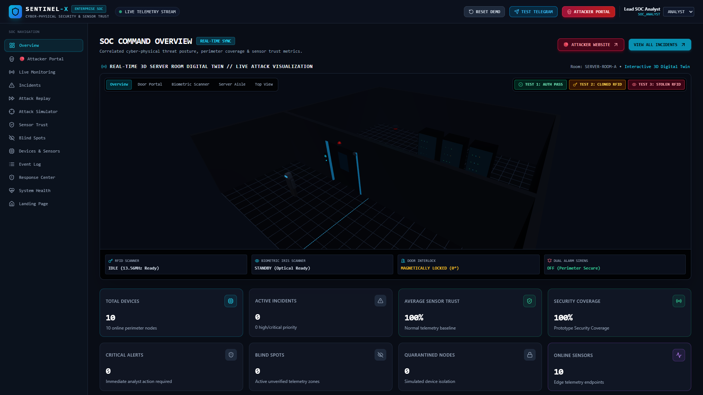
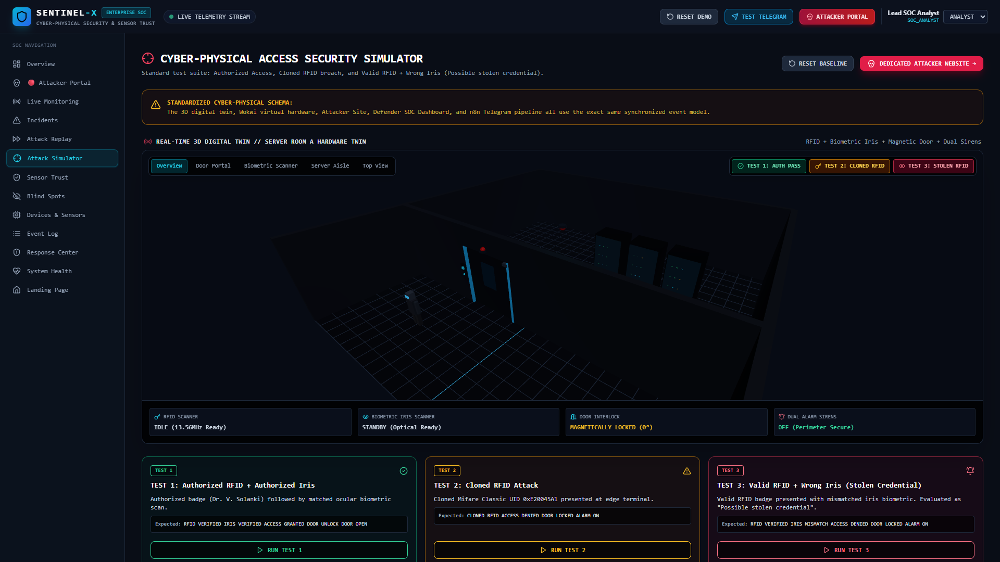
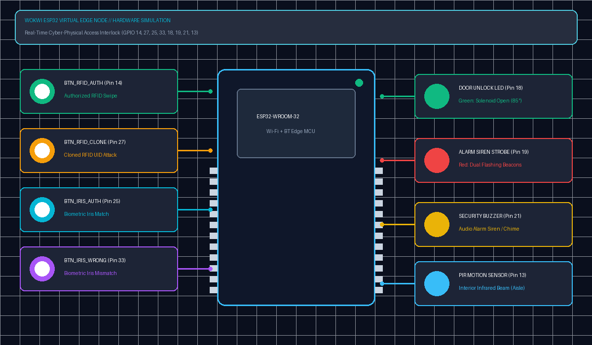
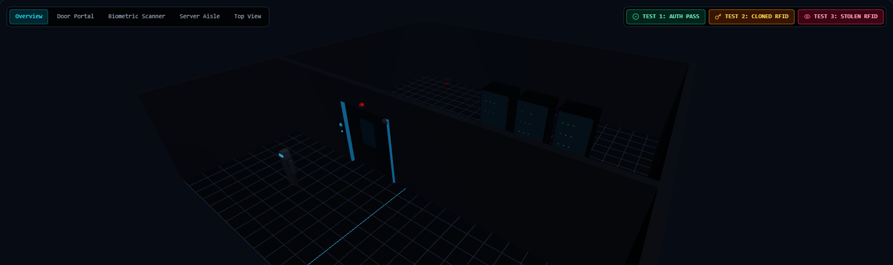
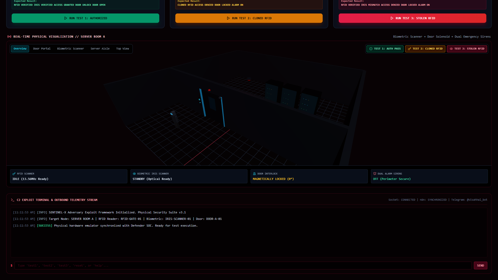
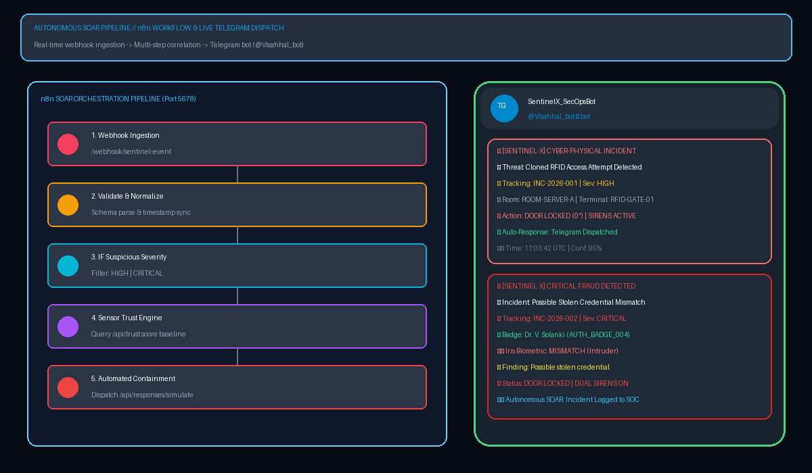
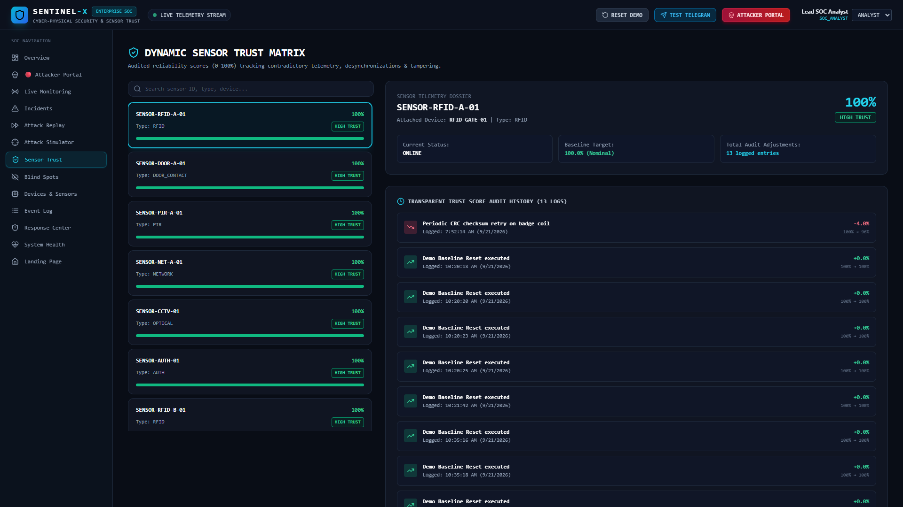

PowerPoint File: C:\Users\visha\Desktop\SENTINEL_X_Project_Presentation.pptx
Autonomous Cyber-Physical Perimeter Security, Biometric Multi-Factor Correlation & Dynamic Sensor Trust Architecture.

Mifare Classic 13.56MHz cards are trivially cloned in seconds with cheap handheld tools (Flipper Zero, Proxmark). Static readers only inspect card numbers.
Legacy systems falsely assume whoever holds the badge IS the authorized human. Stolen badges grant frictionless physical entry without raising any alarm.
Intruders manipulate PIR motion sensors and magnetic reed switches using packet jitter and synthetic heartbeats. SOCs lack cyber-physical correlation.
Zero-Lag Synchronization: Wokwi, 3D Twin, Attacker Portal, and SOC Board use the exact same event model.


test1, test2, test3).
Authorized RFID + Authorized Iris
Cloned UID 0xE20045A1
Valid RFID + Unknown Human Iris



/webhook/sentinel-event.